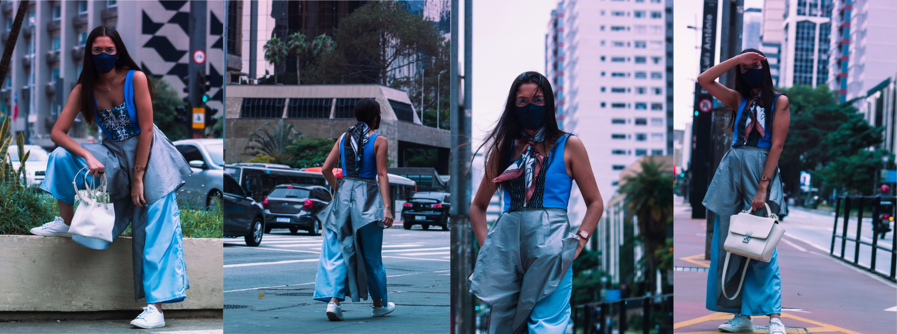
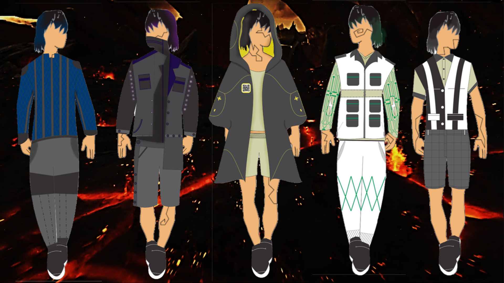
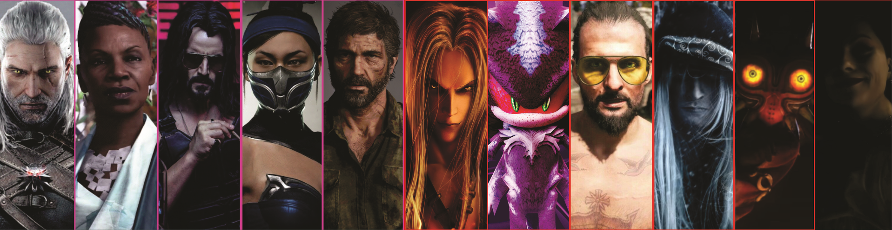

Criações de André Coutinho
Essas são algumas de minhas criações.
Se quiser saber mais, entre em contato: andre.coutinhom@gmail.com.
Colete Bombus

Utoph

Projeto Integrador coordenado pelo professor Kledir Salgado, realizado durante a graduação em Design de Moda dentro de um grupo composto pelos seguintes designers: André Coutinho de Macedo Silva, Bárbara Freire de Andrade, Beatriz Santos Matos e Carolina Ventino Cardoso. Foram realizadas extensas coleções de roupas ergonômicas voltadas para mobilidade urbana, nas quais um look foi escolhido para ser desenvolvido como peça física.
O.C.I.M.

Centro de pesquisa em roupas eletrônicas fictício conceituado como parte de uma atividade da disciplina de análise de tendências do professor Kledir Salgado. O.C.I.M. significa Organização de Ciências Inovadoras na Moda. Os looks desenhados refletem diferentes fatores humanos que podem ser aprimorados através da aplicação de tecnologias avançadas em roupas: Resistência, Força, Velocidade, Suporte e Controle. Os looks são descritos como trajes com fechamento magnético, condução elétrica e alteração de forma
Maquetes Quânticas

Educação em Personagens de Games

Uma pesquisa científica realizada sob a orientação dos professores Adalberto Bosco e Marvin Schneider no projeto de iniciação científica "Desenvolvimento de Game para Ensino de Gestão de Projetos seguindo Boas Práticas de Game Design". O artigo propõe uma análise de como a interação de jogadores de videogame com seus personagens pode mudar sua performance educativa. Foi utilizado como base o estudo de Jean Piaget diante da cognição e afetividade na pedagogia. O artigo obteve resultados bem embasados, recebendo certificado de mérito acadêmico no congresso de iniciação científica do Centro Universitário Senac.